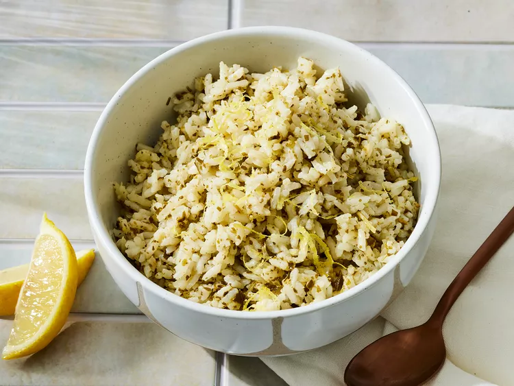

Pesto Rice
Home

This restaurant-worthy pesto rice recipe, developed in our test kitchen, will elevate even the simplest of dinners.
- Onion and butter: the pesto starts with an onion in a tablespoon of butter.
- Rice and Water: The recipe calls for a 1:2 ratio of long grain white rice to water.
- Seasonings: Simply season the pesto with salt and pepper.
- Pesto: use store-bought or home-made pesto.
- Lemon: a teaspoon of lemon zest adds welcome brightness. Plus you will garnish the pesto with lemon wedges.
And how to make it?
- Cook the onion in butter, then add the rice and stir to coat.
- Add water and seasonings, then bring to a boil.
- Cover and simmer until the rice is absorbed. Let stand, covered, for 5 minutes.
- Fold in pesto and lemon zest until combined, then serve with lemon wedges.